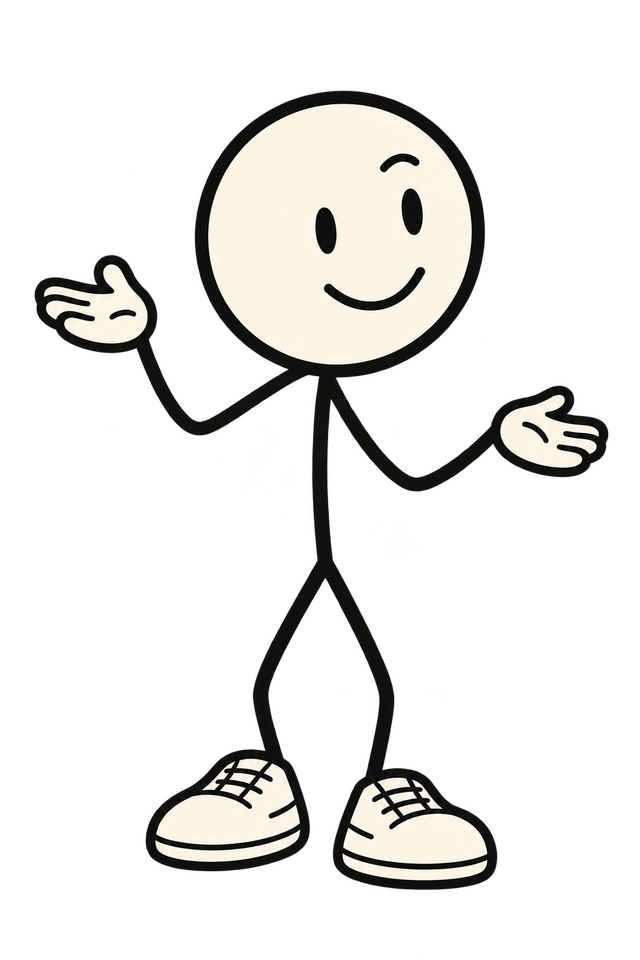
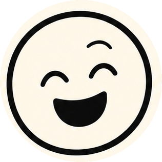
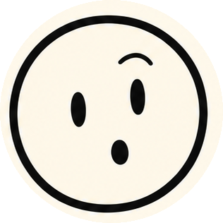
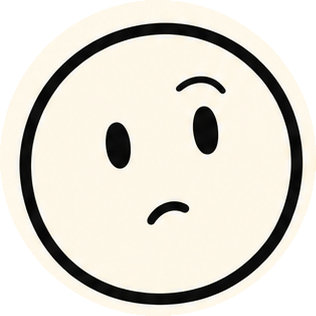
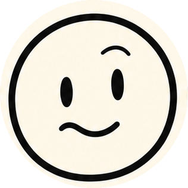
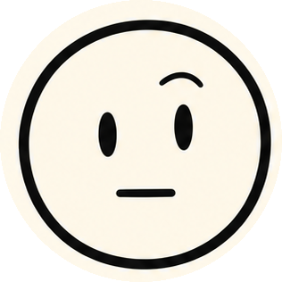
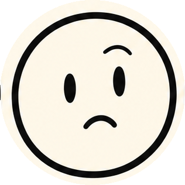

08 · Doddy's interaction states
Every state is a pose from the owner's pack, swapped as a still image. No redrawing, no rig. Lines are in Doddy's handwriting.

Idle
Sits in the hero when nothing happens. Blink every 4 to 6 s (pack blink sheet).
Take your time.

Hello
Page load and the end of the day. The same wave the app uses.
Pick one.

Listening
When a scene opens and the visitor "asks". Matches the app's Listening status.
Go on.

Thinking
Between the question and the answer, 600 ms. Three dots in the bubble.
Hang on.

Oh no
Hover on the alarm clock; the "late again" moment. Comedy, never shame.
Oh. That one.

Done
A note found, a reminder confirmed. Only after a real receipt.
Got it.

Not found
The honest miss. The line is the app's real no-match wording.
I couldn't find that in your saved memories.

Private
The "What's real today" strip and the privacy notes.
Stays on your iPhone.

08:45
Morning in the bedroom scene. Also the hover state for the alarm on the second visit.
Morning. Ish.

Reaching
The shopping bag moment; also the hover for the bag.
Top shelf. Of course.

Surprise
Once per visit, if the visitor scrolls past the footer: Doddy peeks in from the edge.
Still here.

Travelling
Walk and run frames from the pack move him between moments (frame swaps at 8 fps).
Right. Next.









Cut from the pack's front expression sheet (004). "Focused" is the quick pick with humour off; "playful" the one with humour on.
- Still images only: pose swaps, CSS transforms and opacity. No canvas, no video, no Lottie rig, because the pack has none.
- Travel between moments: walk/run frames at 8 fps, 600 ms, ease-out, at most once per scroll step.
- Reduced motion: no travel, no drift, no bubble pop; poses still swap, so nothing is lost.
- Doddy never covers text. Where a bubble and a pose compete on a phone, the pose shrinks (the site's film rule).
- Lines are Caveat 700, like the homepage. One dry beat per line, never a joke in the "What's real" strip.